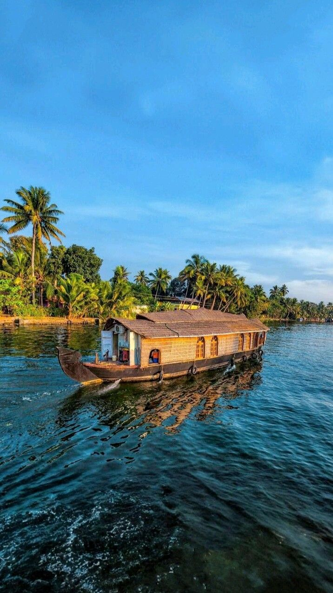

ALAPPUZHA
Often referred to as the “Venice of the East,” Alappuzha is a serene coastal town in the Indian state of Kerala, famous for its interconnected canals, lagoons, and tranquil backwaters. It's a top destination for houseboat cruises, offering a peaceful escape into Kerala’s lush landscapes and slow-paced village life.A mesmerizing network of canals, rivers, lagoons, and Vembanad Lake stretching over 900 km.Traditional kettuvallam houseboats, crafted from bamboo and wood, offer day or overnight cruises—complete with comfort and local cuisine.
From the charming Alappuzha Beach with its iconic pier to the scenic stretches of Kuttanad’s paddy fields, the town is a perfect blend of natural beauty and cultural richness. Whether you seek a romantic getaway, a cultural retreat, or just peace by the water, Alappuzha delivers an unforgettable experience.Glide past coconut palms, paddy fields, local villages: sari‑clad women, fishermen, and children at play create timeless scenes.Alappuzha Beach is perfect for a tranquil sunset walk.The historic Alappuzha Lighthouse (built 1862) offers coastal views. Iconic snake boat races, especially the Nehru Trophy held during Onam on Punnamada Lake—spectacular team rowing events.Ancient spice trading centre, with canals and port developed by Raja Kesavadas in the 18th century.A hub for coir (coconut fibre) products and coastal fishing.
Places To Visit
The backwaters of Alappuzha are a mesmerizing network of canals, lakes, rivers, and lagoons that weave through lush paddy fields, coconut groves, and sleepy villages.
This unique ecosystem is a hallmark of Kerala’s natural beauty and a must-experience for every traveler.
A houseboat cruise along these serene waters offers a window into the simple, rhythmic life of the region—
where locals travel by boat, fishermen cast nets from their canoes, and birds glide silently over the water.
As the sun sets over the tranquil waters, the golden reflections and gentle ripples create a truly unforgettable sight.
Alappuzha Beach (also called Alleppey Beach) is a serene seaside gem in Kerala—your local go-to spot for a laid-back day by the Arabian Sea.
Relax on the golden sands of Alleppey Beach with its 150-year-old pier and iconic lighthouse.
Lies just about 1 km from Alappuzha Railway Station and roughly 4.5 km from the KSRTC bus stand
Open 24/7, although the ideal time to visit is during daylight—sunrise to sunset .
Free entry, though some park/ride activities have small charges.

Discover Kerala's royal heritage at Krishnapuram Palace, known for its mural art and ancient artifacts.
Krishnapuram Palace, nestled in Krishnapuram near Kayamkulam in Alappuzha district, is a stunning example of 18th-century
Kerala architecture that now serves as an archaeological museum.
Originally commissioned by Veera Ravi Varma of Odanad (~1700–1775 CE), it was transformed into a grand palace
by King Marthanda Varma of Travancore after annexing Kayamkulam in 1746.
Houses Kerala’s largest mural painting,
“Gajendra Moksham”, covering around 49 m², illustrating Vishnu’s rescue
of an elephant—painted above the western entrance by the pond
On NH‑66 between Ochira and Kayamkulam, ~47 km from Alappuzha, ~5 km from Kayamkulam Junction
and monday the palace is closed.
Visit the sacred Ambalapuzha Sree Krishna Temple, famous for its traditional payasam and divine ambiance.
Ambalappuzha Sree Krishna Swamy Temple is a revered Hindu shrine in Alappuzha district, Kerala, dedicated to Lord Krishna.
Founded in the 15th century CE by Chembakasserry Pooradam Thirunal Devanarayanan Thampuran, it's among the seven major temples of Travancore.
Legend tells of Krishna challenging the king to chess, wins and claims rice doubling per square—leading to an impossible amount.
Krishna then instructs the king to serve paal payasam daily until debt repaid.Come early to catch the morning aarti and secure your Pal Payasam.
Pre-book payasam to avoid disappointment.
Dress modestly: men in dhoti/mundu, ideally without upper garment in inner sanctum;
women in saree or salwar kameez.Aim to visit during festival season (March–April or Mithunam month) for vibrant cultural experience.
What To Do
üö§ 1. Houseboat Cruise
- What to Do: Book a traditional kettuvallam for a day cruise or overnight stay.
- Where: Alleppey Boat Jetty, Punnamada, Finishing Point.
- Experience: Enjoy village views, paddy fields, coconut groves, and Kerala meals onboard.
- Tips: Best time is October–March. Book through Kerala Tourism or private agencies.
üß∂ 2. Coir Making
- What to Do: Visit a coir factory or village to see how coir is made from coconut husks.
- Where: Kalavoor, Pallathuruthy, or local coir museums.
- Experience: Watch women spinning coir, learn about mats and ropes, try hands-on.
- Tips: Combine with village tours. Local handicrafts available to buy.
üõ∂ 3. Boat Racing (Vallamkali)
- What to Do: Watch thrilling snake boat races like the Nehru Trophy Boat Race.
- Main Event: Every August at Punnamada Lake.
- Experience: Book grandstand or houseboat viewing seats for the best views.
- Tips: Book early. Also check out races like Champakulam Moolam or Payippad Jalotsavam.
üåæ 4. Explore Kuttanad
- What to Do: Visit below-sea-level paddy fields and rural villages.
- Where: Chennamkary, Kainakary, Nedumudi, Kavalam.
- Experience: Canoe through narrow canals, explore fields, visit local homes.
- Tips: Go in early morning or late afternoon.
How To Reach

Nation Highway 66, connecting Panvel to Kanyakumari runs through the Alappuzha city centre. The Alappuzha Bypass was built to route the national highway around city centers between Kommady and Kalarkode. National Highway 66 connects Alappuzha city to other major cities like Mumbai, Udupi, Mangalore, Kannur, Kozhikode, Ernakulam, Kollam and Thiruvananthapuram. There is a plan to upgrade State Highway 11 to a national highway in order to help connect Alappuzha to Kodaikanal as part of promoting the coastal-hill tourism project.
Cochin International Airport, which is 78 kilometres (48 mi) to the North, is the closest airport. Thiruvananthapuram International Airport, 159 kilometres (99 mi) to the South, is the other airport that links the district with other countries. International tourists use these airports to reach Alappuzha. The other nearest airports are Calicut (236 kilometres (147 mi)) and Coimbatore (254 kilometres (158 mi)) airports. A helipad in the town is reserved for government uses.
Alappuzha is linked by Ernakulam–Kayamkulam coastal railway line and connects to cities like Thiruvananthapuram, Kollam, Kochi, Coimbatore, Chennai, Delhi, Bokaro and Mumbai. The railway station is about 4 kilometres (2.5 mi) from the heart of the city. A total of four trains originate from Alappuzha to cities like Kannur, Chennai, Dhanbad and Tatanagar.
The presence of a lot of backwaters and canals makes water transport a popular means of transport. National Waterway-3 passes through Alappuzha. There is a SWTD boat jetty in the city that lies opposite to the KSRTC bus stand. It is served by boat services to Kottayam city and besides other small towns and jetties. Availing an SWTD boat is a cheaper alternative to houseboats for visiting tourists.
Recommendations
☕ Cafés in Alappuzha
Alappuzha’s cafés offer a charming blend of Kerala warmth and bohemian vibes. Many are tucked along the canals or close to the beach, serving freshly brewed coffee, smoothies, and local snacks. Whether it's a cozy bamboo hut-style café or a rooftop overlooking the backwaters, these spots are perfect for unwinding with a book or watching boats drift by. Unwind in lake-view cafés with authentic Kerala snacks, tea, and a relaxed vibe.
üõ∂ Canoe Ride Experience
For a more intimate backwater journey, canoe rides take you where houseboats can’t—through narrow canals, under low bridges, and past quiet villages. Guided by local boatmen, these silent glides offer glimpses of daily life: women washing clothes at the edge, children waving from porches, and ducks paddling beside your boat. It’s slow travel at its purest. For a more intimate backwater experience, take a guided canoe ride through the narrow canals.
üêü Seafood Delights
Alappuzha is a paradise for seafood lovers. From spicy fish curries to grilled prawns and crab roast, the dishes are bursting with the flavors of coconut, tamarind, and local spices. Most restaurants and houseboats serve fresh catch-of-the-day meals, often on banana leaves, giving you a truly coastal culinary experience. Savor spicy Kerala seafood at local toddy shops — don’t miss the Karimeen Pollichathu.
ü•• Toddy Shops
Alappuzha is not just known for its serene backwaters but also for its iconic toddy shops—rustic roadside eateries that serve freshly tapped toddy (a mildly alcoholic drink made from coconut palm sap) along with some of the most authentic and spicy Kerala-style seafood and meat dishes. Popular among both locals and tourists, these shops offer a unique culinary experience, often nestled amidst lush greenery or beside tranquil canals. Signature dishes like kappa (tapioca) with spicy meen curry (fish curry), konchu roast (prawn roast), and duck roast are best enjoyed with a glass of freshly tapped toddy. Visiting a toddy shop in Alappuzha is not just about food—it's a cultural experience that captures the rustic charm and bold flavors of Kerala’s countryside.